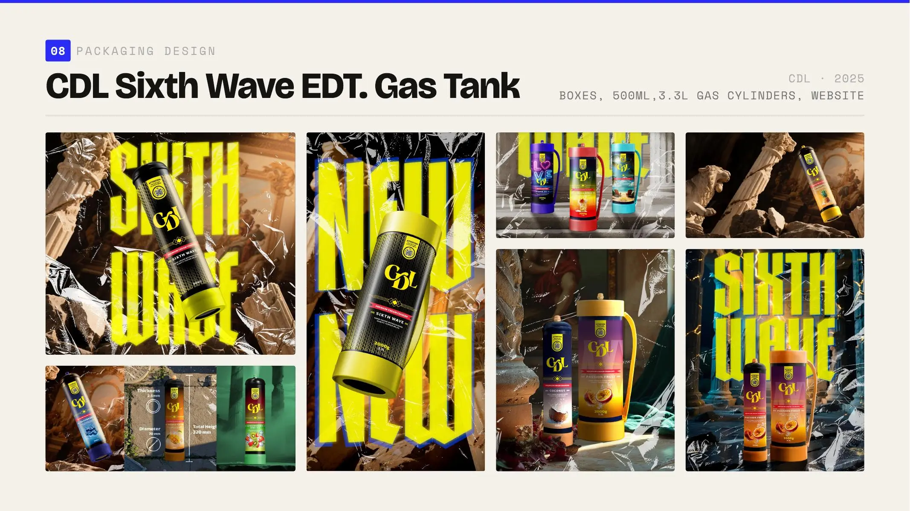
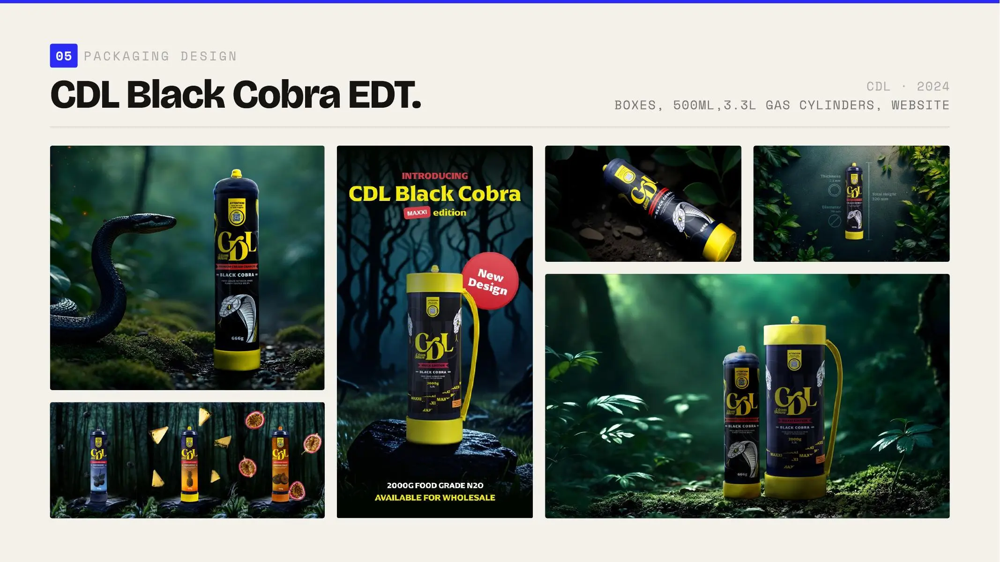
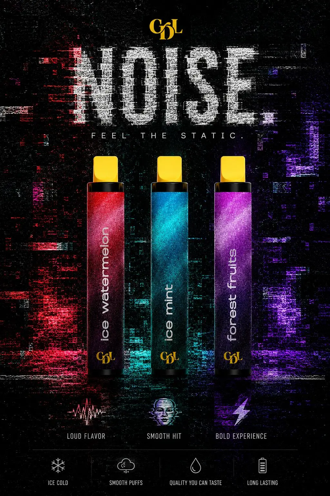
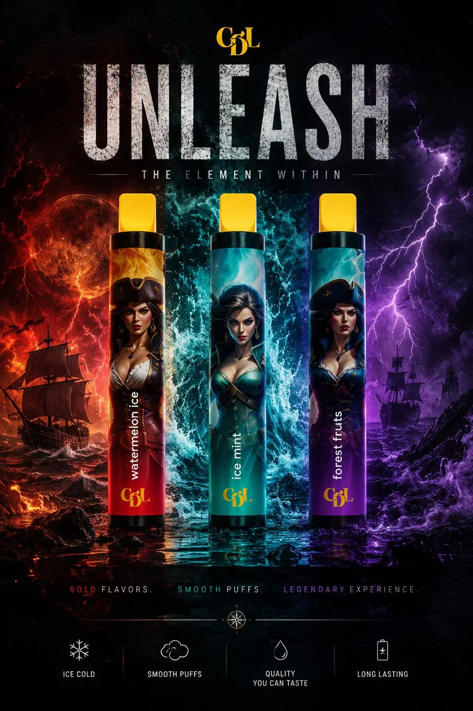
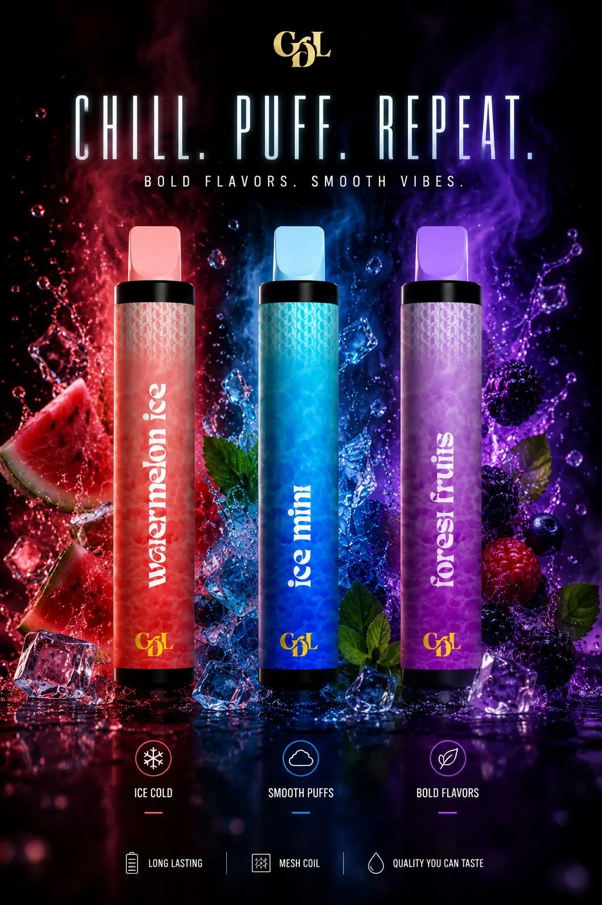

CDL.
Packaging and product systems designed to make a commodity product unmistakable.
- Role
- Packaging & brand designer
- Period
- 2024—2025
- Scope
- Packaging, product systems, web, campaigns
- System
- International

How do you differentiate a product that is fundamentally the same as everyone else’s?
The scope
Packaging strategy, product systems, variants, boxes and launch communication.
The challenge
Cream Deluxe sells N₂O cylinders. With limited functional room for differentiation, brand and packaging became one of the strongest opportunities to compete online and on physical shelves.
My contribution
I worked as lead packaging designer, researching the competitive landscape and developing multiple creative territories. I then translated the selected directions into scalable systems across formats, product families, flavors and launch material.
Build the architecture before decorating the package.
Packaging strategy
Every new product introduced another combination of cylinder, box, flavor, size and market message. The system first established repeatable relationships between the master brand, product name, variant information, color and campaign language.
Black Cobra: sleek, premium and aggressive.
Selected direction
The Black Cobra direction translated the client’s request into an illustrated identity centered on a cobra in motion. Organic white strokes form the animal against a strong visual base, creating packaging that can sit beside premium bar products instead of reading like industrial equipment.
From that core identity, I built a scalable system across nine variants, two cylinder formats and corresponding boxes. Color and artwork give every flavor its own personality without losing recognition of the master brand.

Sixth Wave: a new world for wider markets.
International collaboration
As CDL expanded toward additional markets, Sixth Wave introduced a layered visual world combining classical imagery with contemporary energy and moving away from the Cobra identity.
I contributed as a designer and packaging designer within the wider international creative team, adapting one launch idea across editions, formats and flavor families.


A visual language for the launch.
Compressed typography, yellow accents and rough textures connect the launch campaign to the cylinder labels. The same visual language carries through the catalogue and product presentations.


Two editions. Fifteen flavours in each.
Classic and MAXXI share a consistent label hierarchy. Flavour names and color cues distinguish the variants while the CDL mark and edition information stay in familiar positions.


One launch idea, adapted by edition.
The strongest campaign compositions are grouped by product family. Switching edition changes the story and imagery while keeping the section compact.
The same launch language across product, story and sales.
The launch identity extends into brand storytelling, product verification and wholesale communication, giving each application a shared visual language.


Exploration that strengthened the final systems.
Creative territories
Early concepts tested how far the product could move from industrial conventions. The strongest decisions became practical rules for recognition, variation and future expansion.



Distinct product worlds held together by scalable packaging logic.
- Developed multiple competitive territories before selecting and expanding the strongest directions.
- Built Black Cobra across nine variants, two cylinder formats and corresponding boxes.
- Extended the work into flavor systems, limited editions and launch communication.
- Contributed to Sixth Wave within an international creative team as designer and packaging designer.